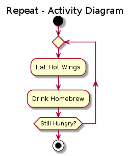

Planning phase
Questions
How to use UML and Pseudocode?
Can we learn it?
Objectives
We will give an overview of UML diagrams
learn when to use
learn basic notations
We will see some examples of Pseudocode
Instructor note
Some overview
The planning steps
Analysis
Get an overview of the project/program and goals
to state the problem and define inputs and outputs
Gather requirements
graphical tools like UML
Design
to find out the specific algorithms needed
pseudocode
Analysis step
UML Diagrams
Flowchart
Object-orientation programming
Identify objects
Functional programming
Identify functions
Text can also work here, describing the problem as a whole
Design step
Pseudocode
Object-orientation programming
Identify classes that objects can belong to
UML
Functional programming
Identify algorithms
The Planet project
Analysis
Planet project
Background
The climate last about 1 million years has been largely determined but the change of the eccentricity (elongation) of Earth’s orbit (One of the Milankovitch cycles.
The glacial cycles (daily speaking: ice ages) with a period of about 100 000 years are thought to be due to this.
Theory: The gravity from the other planets, especially Jupiter, causes the change of the eccentricity.
Problem: Reproduce Milankovitch cycle of eccentricity (100ka)
Method: Use Python
Let’s go for functional programming
Input: Some initial positions of the planets but no external data
Perhaps also user input of length of simulation
Output: Graph of orbits and a timeseries of an eccentricity parameter
Development steps (we extend the program with iterations)
Earth-sun system
Add Jupiter
Make modular
Add more planets?
PlantUML Cheat sheet
UML code (if this is rendered automatically, turn off the plugin!)
@startuml
skin rose
title Repeat - Activity Diagram
start
repeat
:Eat Hot Wings;
:Drink Homebrew;
repeat while (Still Hungry?)
stop
@enduml
UML graph

Let’s make a flowchart of the program parts
Exercise
We want to make a activity diagram of these steps.
I will use https://www.planttext.com/ for this
define some parameters
initialize earth (and Jupiter later on)
repeat until simulation time is met
calculate new position
calculate acceleration
calculate velocity in two dimensions
then plot figure
Solution
@startuml
skin rose
title Planet flowchart
start
:define some parameters;
:initialize earth (and Jupiter);
repeat
:calculate new position;
:calculate acceleration;
:calculate velocity in two dimensions;
repeat while (simulation time is met) is (no)
->yes;
:figure plotting;
stop
@enduml
It should look something like this:
@startuml
skin rose
title Planet flowchart
start
:define some parameters;
:initialize earth (and Jupiter);
repeat
:calculate new position;
:calculate acceleration;
:calculate velocity in two dimensions;
repeat while (simulation time is met) is (no)
->yes;
:figure plotting;
stop
Design
A way to visualize a system’s architectural blueprints in a diagram, including elements such as:
any activities (jobs);
individual components of the system;
and how they can interact with other software components;
how the system will run;
how entities interact with others (components and interfaces);
external user interface.
Although originally intended for object-oriented design documentation, UML has been extended to a larger set of design documentation, and been found useful in many contexts.
Note
- Many people jump this step feels it's more comfortable to write in the actual programming language directly
- This will not be covered deeply in the lessons of the week
Example
algorithm ford-fulkerson is
input: Graph G with flow capacity c,
source node s,
sink node t
output: Flow f such that f is maximal from s to t
(Note that f(u,v) is the flow from node u to node v, and c(u,v) is the flow capacity from node u to node v)
for each edge (u, v) in GE do
f(u, v) ← 0
f(v, u) ← 0
while there exists a path p from s to t in the residual network Gf do
let cf be the flow capacity of the residual network Gf
cf(p) ← min{cf(u, v) | (u, v) in p}
for each edge (u, v) in p do
f(u, v) ← f(u, v) + cf(p)
f(v, u) ← −f(u, v)
return f
Do some pseudocode of the calculations
Demo of Pseudocode
Define constants
Define initial values
positions
velocity (balance of gravity and centrifugal force)
(Allocate (book) space for long vectors plan iteration)
Iteration
Change of positions
Calc acc (gravity)
Calc new velocity
Plot resulting ellipses
Calculate orbit parameters
Plot time series of parameter change
Wrap-up
UML & Pseudocode
Menti
I have used it
I like it
I plan to use it
Note
More practicals on UML later this week!
Pseudocode will not be covered deeply in the lessons of the week
Parts to be covered
☑ Planning
Pseudocode
Unified Modelling Language
☐ Testing
We don’t do this today!
☐ Source/version control
☐ Collaboration
☐ Sharing
☐ Documentation
Summary
Keypoints
UML is good in several conditions
Structural overviews
Planning
Problem solving
Designing phase of programming
Pseudocode gives a more detailed description what you want the program to do.
Can be highly personal or very language-like
Many people jump this step feels it’s more comfortable to write in the actual programming language directly